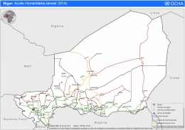

Niger: A convergence of crises
The dusty and dry harmattan wind fades as the sun climbs above the community at Adjiri. This small community sits on the outskirts of the town of Diffa in Niger’s far south-east. It is made up of 191 families who were relocated here when the Komadougou River burst its banks in November 2013, reaching almost five metres – a height not seen in almost 40 years.
In all, more than 15,000 people were displaced. At Adjiri, people are living in white tents provided by the International Organization for Migration (IOM) with funding from the Central Emergency Response Fund (CERF).
Drinking water is a rare commodity here. Abubakar Ary visibly strains as she carries a 40 litre container of water to her tent. "We walk 2km to fetch water every day, morning and evening from a borehole. There are no wells or water points anywhere closer."
To address this, the International Committee of the Red Cross (ICRC) has started to dig five boreholes in the surrounding area, including two in Adjiri.
Food reserves are exhausted
Abubakar Ary has not lit the fire for cooking today because there is no food. "We’ve had nothing to eat for ten days," says her husband, Mohamed Dala. "Before the floods of 2012 – I could at times produce 50 bags of peppers as well as millet and maize."
The ICRC and the Red Cross Society of Niger have distributed food to families at Adjiri, and intends to provide pumps for farmers to irrigate their crops.
But right now food reserves are exhausted, and Mohamed has taken work in nearby rice fields earning him less than US$5 per day – barely enough for the sixteen mouths he needs to feed. His three wives are peeling rice, a thankless task that provides very little in the way of compensation.
"Lately, we have been struggling to find work,” Mohamed says. “So many people are looking for it. This means jobs are scarce.”
A community battered by several crises
Still, the 2013 floods were of such a magnitude that the situation would have been even worse if the humanitarian community had not reacted to it quickly.
"The international community was quick to respond to support the government," says Ousmane Koussouri, the Mayor of Diffa. He says he is happy that the support enabled people to live with a minimum level of dignity.
But the humanitarian response has not solved all of the issues that people here face – far from it. People in the Diffa Region are dealing with a number of crises. Even before the floods, many were plagued by chronic food insecurity because of recurrent failed crops.
The November 2013 floods were preceded by inundations in August and December 2012 that resulted in local economic losses estimated at close to $20 million, and again in August 2013.
The area is also home to an estimated 37,000 people who have fled fighting in northern Nigeria, a massive refugee influx that has placed further pressure on the meagre resources of communities. This accumulation of factors often forces people to take drastic and ultimately self-defeating steps to survive.
“To meet their food needs, women [are sometimes] forced to sell their goats and sheep at very low prices," says Mustapha Malam Kourou, a nurse at a village health post in Adjiri.
Promote early recovery
"We do not want to go back where we came from,” says Mohamed, sitting outside his family’s tent in Adjiri. “We want to rebuild our lives here.”
Mohamed, like many of those in Adjiri, wants to make this resettlement permanent. The land here doesn’t flood and it seems fertile. He is waiting for seeds and farming and irrigation equipment so he can start cultivating the land.
Since the flooding started, more than $630,000 has been mobilized by the Government and the international humanitarian community to help people like Abubakar, Mohamed and their family. A further $1.3 million is needed to meet the needs of communities in Diffa, according to a provisional plan by the Government of Niger.
Dieudonne Bamouni, the Head of OCHA’s office in Niger, says that this funding will help the government and aid agencies provide people with food, emergency shelter, relief supplies, clean water and medicines.
“These funds will allow the coverage of basic needs for about 20,000 people who are lacking the simplest necessities, and living in precarious humanitarian situations,” he said.

{kind=link}